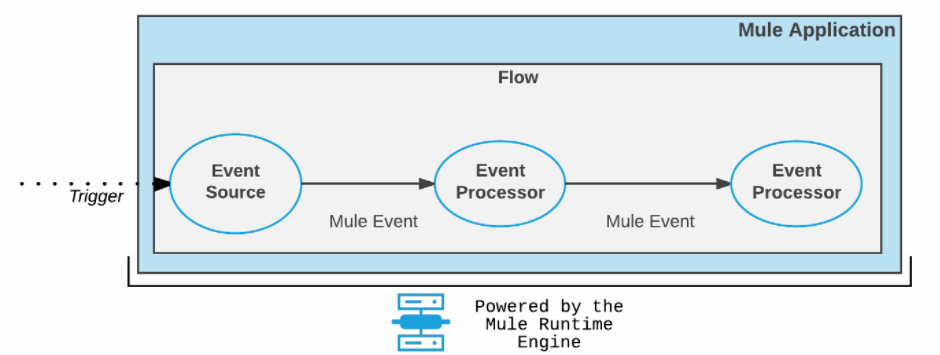
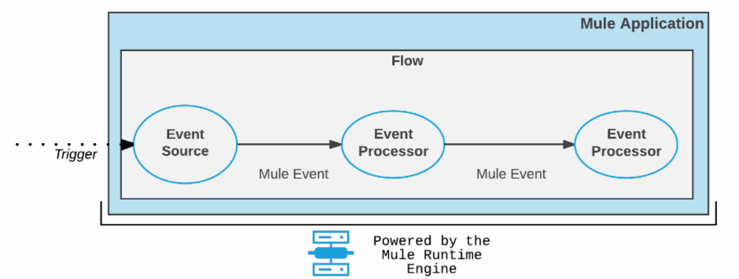
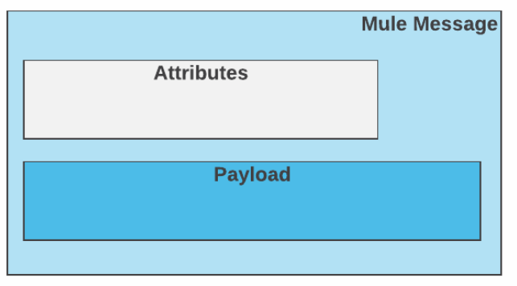

mulesoft
1、mule组件
mule组件对流经mule应用程序的消息进行业务处理。
mule组件主要分为两种类型：core component 和 连接器component.
2、flow和subFlow
Flow和SubFlow是mule应用程序中的大组件，一般在Flow组件和SubFlow组件的范围内再去设置其他组件、连接器、和模块等。
应用程序可以是一个Flow，也可以由一个Flow和很多SubFlow组成。
可以使用 Flow Reference 组件去引用其他的SubFlow等。可以将 Flow Reference 组件视为一个函数调用，它接受一个事件作为输入，然后返回修改后的事件。
3、 mule 事件
mule事件被外部事件源触发，按照mule配置在mule应用程序内的组件中进行传播，mule事件包含运行时处理的核心信息。
mule事件由以下对象组成：
1. mule消息。包含payload和attributes。
2. mule变量。
 消息源触发mule事件的生成，并将该事件分派到flow。

1. 触发器到达事件源。
2. 事件源产生一个 Mule 事件。
3. Mule 事件按顺序通过流的组件。
4. 每个组件都以预定义的方式与 Mule 事件交互。
在某些情况下，当 Message 源中出现问题时，组件不会产生 Mule 事件。例如，HTTP 侦听器配置中的无效或不正确的路径会阻止创建 Mule 事件。连接器在 ERROR、WARN 或 INFO 消息中记录此类问题。
消息源触发mule事件的生成，并将该事件分派到flow。

1. 触发器到达事件源。
2. 事件源产生一个 Mule 事件。
3. Mule 事件按顺序通过流的组件。
4. 每个组件都以预定义的方式与 Mule 事件交互。
在某些情况下，当 Message 源中出现问题时，组件不会产生 Mule 事件。例如，HTTP 侦听器配置中的无效或不正确的路径会阻止创建 Mule 事件。连接器在 ERROR、WARN 或 INFO 消息中记录此类问题。
4、 mule事件-variables
mule变量用于存储mule事件中的某些值，以方便在mule应用程序的流程中使用。
mule变量可以存储任何受支持的数据，比如对象、字符串、数字等。
使用message关键字存储当前消息；
使用payload关键字存储当前payload；
使用attributes关键字存储当前消息的属性信息。
还可以使用dataweave表达式作为变量值进行存储。
可以使用下面的方式去创建和更新mule变量：
1. 使用set variable组件。
2. 在操作中使用目标变量，例如对文件连接器的读取操作或对数据库连接器的存储操作。
3. 使用 DataWeave 转换组件（仅限 EE）
4. 使用脚本组件（在脚本模块中）
使用删除组件去移除删除变量：Remove Variable 组件。
创建变量后，可以在创建它的mule flow和通过flow ref连接的任何subFlow中访问和使用它。
vars：用于访问变量的关键字。
例如，通过 Mule 组件（如 Logger）中的 DataWeave 表达式，或从操作的 Input 或 Output 参数访问。如果您的变量名称是myVar，您可以像这样访问它：vars.myVar
5、 mule事件-mule消息结构
mule message是mule事件的一部分，是用来存储消息内容和元数据的容器，通常来自于外部源。
mule message是不可变的，因此对于mule message的每次更改都会创建一个新实例。接收消息的flow中的每个处理器都会返回一个新的mule消息，该mule消息由以下组成：
1. 一条payload，其中包含消息的正文。比如文件的内容，数据库中的记录或者WEB服务器的请求或者响应。
2. Message attributes，这是与payload关联的元数据。

6、 payload
payload包含消息的内容或者正文。
比如，payload可以包含http请求的结果、从数据库查询出来的数据、或者从FTP服务器读取出来的文件内容。
我们直接使用变量 payload 来读取payload中的内容。
比如：
payload如下：
{ "hello" : "world" }
则payload.'hello'表示取出json对象中的值 “world”。
7、 attributes
attributes包含与正文或者payload相关联的元数据。
通过attributes关键字去获取对应的属性。
案例：http响应属性
{
Status Code=200
Reason Phrase=OK
Headers=[
date=Sun, 20 Jan 2019 19:13:51 GMT
content-type=text/html;
charset=UTF-8
transfer-encoding=chunked
connection=keep-alive
set-cookie=__cfduid=d03462713a0b2c57c8d2ad3bf311287041548011631;
expires=Mon, 20-Jan-20 19:13:51 GMT;
path=/;
domain=.typicode.com;
HttpOnly
x-powered-by=Express
vary=Origin, Accept-Encoding
access-control-allow-credentials=true
cache-control=public, max-age=14400
last-modified=Tue, 15 Jan 2019 18:17:15 GMT
via=1.1 vegur
cf-cache-status=HIT
expires=Sun, 20 Jan 2019 23:13:51 GMT
expect-ct=max-age=604800,
report-uri="https://report-uri.cloudflare.com/cdn-cgi/beacon/expect-ct"
server=cloudflare
cf-ray=49c3dc570c2f281c-SJC
]
}
每个属性都是由等号 ( =)分隔的键值对。
在Flow中使用连接器或者组件时，可以使用 attributes 关键字获取其中特定的属性值。
attributes.statusCode : 选择一个 HTTP 状态代码，如200.
attributes.headers.date : 从 HTTP 响应的标头中进行选择Sun, 20 Jan 2019 18:54:54 GMT。
attributes.headers.'content-type' : 选择 HTTP 内容类型application/json
属性名称的有效标识符
通过attributes访问属性时，只要属性命名完全遵守属性名称的有效标识符规则，则可以不加任何引号就直接访问属性。
如果属性名不符合属性有效标识符，则需要引号来访问属性，比如：
单引号 ( ')
双引号 ( ")
反引号 ( `)
加入有下面的dataweave变量：
var myVar = {
id : "1234",
"123 abc !@#" : "some_value"
}
因为属性 123 abc !@# 不符合有效标识，因此要访问它，应该使用引号或者反引号：
myVar.'123 abc !@#'
同样，因为id是符合有效标识命名规范的，因此访问id的话，下面几种都可以：
myVar.id
myVar.'id'
myVar."id"
myVar.`id`
对于访问 'Status Code' 的话，应该直接使用 statusCode 进行访问。
8、 mule Errors
mule执行失败的话会导致mule错误。
当mule应用程序运行时，Mule 运行时引擎以及应用程序中配置的模块和连接器操作都可能抛出由与 Mule 事件关联的 Mule 错误对象表示的错误。您可以使用 On-Error 组件处理错误对象并在日志中找到有关它们的信息。
Mule 错误包括表达式 ( EXPRESSION) 和与流相关的错误 ( STREAM_MAXIMIMUM_SIZE_EXCEEDED)，而操作可能会抛出许多不同类型的错误。示例包括HTTP:NOT_FOUND（404 错误）和 HTTP:CONNECTIVITY来自 HTTP 连接器中 HTTP 侦听器的错误。
DB:BAD_SYNTAX并且DB:QUERY_EXPRESSION是数据库连接器中的 Select 操作可能引发的错误。
Mule 错误是具有多个字段的复杂数据类型，例如描述和类型。在记录和处理 Mule 错误时，可以从任意数量的错误字段中选择值。
选择器表达式：
#[error.description]：error描述
#[error.detailedDescription]：error详细描述
#[error.errorType]：error类型
#[error.cause]：error原因
#[error.errorMessage]：错误信息
#[error.childErrors]：内部错误的可选集合，由 Scatter-Gather 等元素用于提供聚合路由错误。
在大多数情况下，error.cause选择器返回一个Throwable实例，它是 Mule API 的一部分。不要访问错误的内部结构来定义错误处理逻辑。其他选择器公开了处理错误所需的所有信息。此外，序列化error.cause可能会导致冗余信息。
HTTP 请求错误示例
例如，当 HTTP 请求失败并出现HTTP:NOT_FOUND错误（对于 404 状态代码）时，错误消息每个部分的值是：
#[error.description] 返回：HTTP GET on resource 'http://jsonplaceholder.typicode.com:80/mybadrequest' failed: not found (404).
#[error.detailedDescription] 返回： HTTP GET on resource 'http://jsonplaceholder.typicode.com:80/mybadrequest' failed: not found (404).
#[error.errorType] 返回： HTTP:NOT_FOUND
#[error.cause] 返回： org.mule.extension.http.api.request.validator.ResponseValidatorTypedException
#[error.errorMessage] 返回：
org.mule.runtime.core.internal.message.DefaultMessageBuilder$MessageImplementation
{
payload=org.mule.runtime.core.internal.streaming.bytes.ManagedCursorStreamProvider@223d8f75
mediaType=application/json; charset=UTF-8
attributes=org.mule.extension.http.api.HttpResponseAttributes
{
Status Code=404
Reason Phrase=Not Found
Headers=[
date=Sat, 03 Aug 2019 04:28:29 GMT
content-type=application/json; charset=utf-8
content-length=2
connection=keep-alive
set-cookie=__cfduid=de19ed0b495b5b58e74fa0ee31a700d651564806509; expires=Sun, 02-Aug-20 04:28:29 GMT; path=/; domain=.typicode.com; HttpOnly
x-powered-by=Express
vary=Origin, Accept-Encoding
access-control-allow-credentials=true
cache-control=public, max-age=14400
pragma=no-cache
expires=Sat, 03 Aug 2019 08:28:29 GMT
x-content-type-options=nosniff
etag=W/"2-vyGp6PvFo4RvsFtPoIWeCReyIC8"
via=1.1 vegur
cf-cache-status=HIT
age=96
server=cloudflare
cf-ray=50058b8add0a92fe-SJC
]
}
attributesMediaType=*/*
}